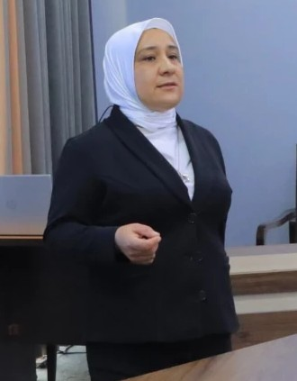

Muallif
Oydin Tashtemirova
Maxsus fan o‘qituvchisi · Piskent tumani 1-son texnikumi
Darslik3-malaka darajasi · 40 soat
Ta’lim yo‘nalishiKompyuter grafikasi va dizayn
Hajmi40 soat (nazariy — 36, amaliy — 4, mustaqil — 0)
Mavzular20 ta mavzu
Elektron darslik imkoniyatlari
- Har bir mavzu slaydlarga bo‘lingan: kirish, reja bo‘limlari, test, mustaqil ta’lim
- Qisqa bayon + «Qo‘shimcha ma’lumot» tugmasi orqali to‘liq matn
- Har bir mavzu uchun jonli 3D ko‘rgazma
- Interaktiv testlar va yakuniy nazorat
- Internetsiz ishlaydigan nusxa (fleshka yoki diskdan)